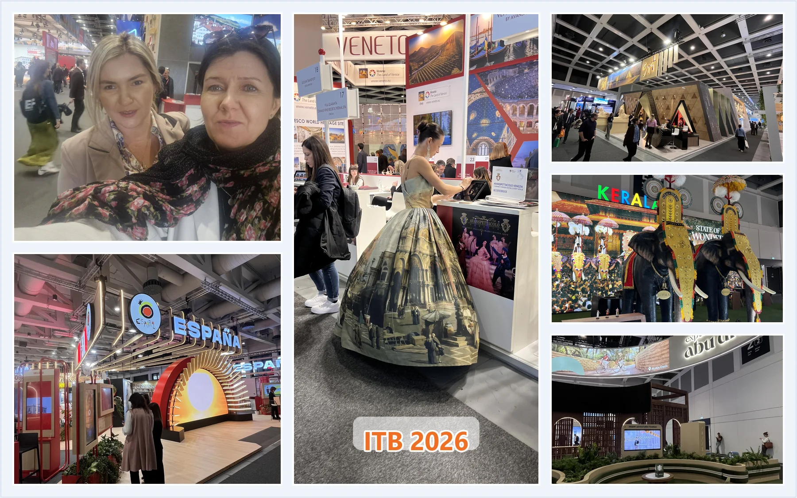

ITB Berlin 2026. Eine Reise um die Welt im Schatten globaler Unsicherheit

Die diesjährige ITB Berlin war für mich eine besondere berufliche Erfahrung. Seit Jahren zählt diese Veranstaltung zu den wichtigsten Treffpunkten der weltweiten Tourismusbranche, und 2026 hatte sie eine zusätzliche Bedeutung, weil sie ihr 60-jähriges Jubiläum feierte.
Die ITB Berlin fühlte sich stellenweise wie eine Reise um die Welt an, konzentriert auf wenige Messehallen. Fast wie eine Branchen-Expo, bei der man an einem einzigen Tag von Asien über den Nahen Osten bis nach Lateinamerika gehen konnte und dabei nicht nur die Angebote einzelner Länder sah, sondern auch die Art, wie diese Destinationen ihre Geschichte der Welt erzählen möchten.
Ich hatte die Möglichkeit, dank der CFI Hotels Group an diesem Ereignis teilzunehmen. Vertreten habe ich sie gemeinsam mit Aleksandra vom Premier Kraków Hotel. Die zwei Aleksandras erwiesen sich als echtes Dream Team: die eine voller Energie, die andere als ruhiger, stabiler Gegenpol. In der Praxis war das eine sehr gute Ergänzung von Charakteren, Arbeitstempo und Arbeitsweise.
Für uns war die Teilnahme an der Messe eine Gelegenheit, Vertreterinnen und Vertreter der Branche aus verschiedenen Teilen der Welt zu treffen, die Hotels und Objekte der CFI Hotels Group zu präsentieren, neue Geschäftskontakte aufzubauen und Trends zu beobachten, die die Zukunft des Tourismus beeinflussen.
Die diesjährige Ausgabe fand jedoch in einem besonderen Moment statt. Der Konflikt im Nahen Osten und die Sorge vor einer möglichen Eskalation bildeten den deutlichen Hintergrund vieler Gespräche. Im Tourismus bleiben solche Ereignisse nie abstrakt. Sicherheit, gesellschaftliche Stimmung und geopolitische Lage wirken sich sehr schnell auf Reiseentscheidungen, gewählte Destinationen und die Aktivität ganzer Märkte aus.
Das war auch auf der Messe selbst sichtbar. Einige beeindruckende Pavillons, unter anderem von Saudi-Arabien und den Vereinigten Arabischen Emiraten, wirkten so, als wären sie auf deutlich mehr Besucher vorbereitet gewesen. Wunderschön gestaltete, sorgfältig ausgearbeitete und eindrucksvolle Räume zeigten das enorme Potenzial dieser Destinationen und erinnerten zugleich daran, wie sensibel der Tourismus auf globale Spannungen reagiert.
Für mich war die Teilnahme an der ITB Berlin 2026 nicht nur eine Möglichkeit, die CFI Hotels Group zu vertreten, sondern auch eine Gelegenheit, die Branche aus einer breiteren Perspektive zu betrachten. Es waren intensive Tage voller Beobachtungen und Gespräche, die gezeigt haben, dass die Zukunft des Tourismus nicht nur von attraktiven Angeboten, Technologie oder Trends abhängen wird, sondern auch von Vertrauen, Stabilität, Sicherheitsgefühl und menschlichen Beziehungen.
Ich bin aus Berlin mit der Überzeugung zurückgekehrt, dass die Präsenz bei solchen Veranstaltungen auch im Zeitalter des Internets und der Online-Kommunikation weiterhin eine große Bedeutung hat. Denn im Tourismus entstehen Beziehungen, mehr als in vielen anderen Branchen, vor allem zwischen Menschen.